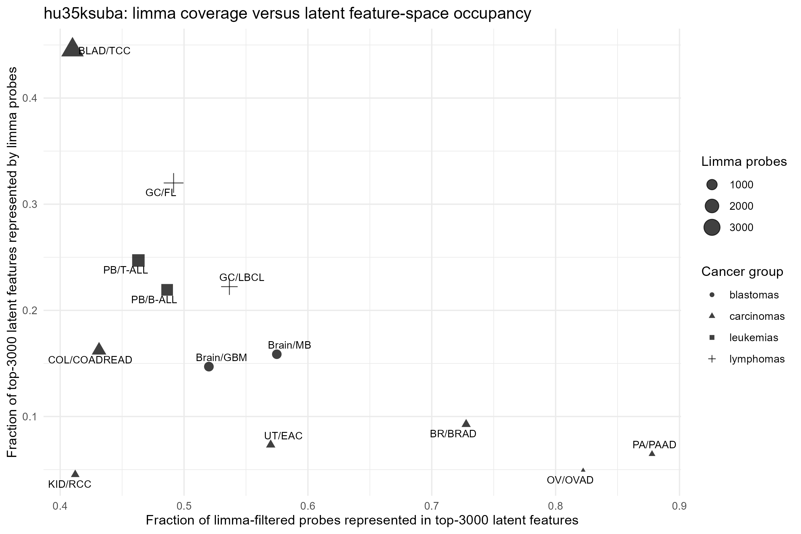
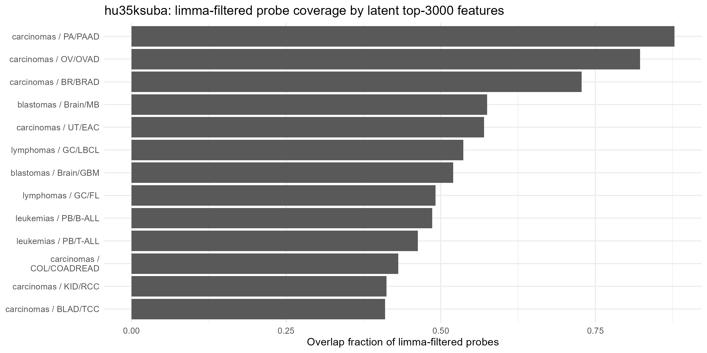

| group | comparison | limma_n | top_feature_n | overlap_n | non_overlap_limma | non_overlap_top3000 | overlap_frac_of_limma | overlap_frac_of_top3000 | fold_enrichment | hypergeom_fdr |
|---|---|---|---|---|---|---|---|---|---|---|
| blastomas | Brain/MB | 828 | 3000 | 476 | 352 | 2524 | 0.575 | 0.159 | 1.315 | 0.000 |
| blastomas | Brain/GBM | 848 | 3000 | 441 | 407 | 2559 | 0.520 | 0.147 | 1.190 | 0.000 |
| carcinomas | PA/PAAD | 221 | 3000 | 194 | 27 | 2806 | 0.878 | 0.065 | 2.008 | 0.000 |
| carcinomas | OV/OVAD | 180 | 3000 | 148 | 32 | 2852 | 0.822 | 0.049 | 1.881 | 0.000 |
| carcinomas | BR/BRAD | 382 | 3000 | 278 | 104 | 2722 | 0.728 | 0.093 | 1.665 | 0.000 |
| carcinomas | UT/EAC | 386 | 3000 | 220 | 166 | 2780 | 0.570 | 0.073 | 1.304 | 0.000 |
| carcinomas | COL/COADREAD | 1129 | 3000 | 487 | 642 | 2513 | 0.431 | 0.162 | 0.987 | 0.800 |
| carcinomas | KID/RCC | 330 | 3000 | 136 | 194 | 2864 | 0.412 | 0.045 | 0.943 | 0.910 |
| carcinomas | BLAD/TCC | 3259 | 3000 | 1336 | 1923 | 1664 | 0.410 | 0.445 | 0.938 | 1.000 |
| leukemias | PB/B-ALL | 1353 | 3000 | 658 | 695 | 2342 | 0.486 | 0.219 | 1.113 | 0.000 |
| leukemias | PB/T-ALL | 1600 | 3000 | 741 | 859 | 2259 | 0.463 | 0.247 | 1.059 | 0.012 |
| lymphomas | GC/LBCL | 1243 | 3000 | 667 | 576 | 2333 | 0.537 | 0.222 | 1.228 | 0.000 |
| lymphomas | GC/FL | 1953 | 3000 | 960 | 993 | 2040 | 0.492 | 0.320 | 1.125 | 0.000 |
15 Probe Feature-Space Concordance
Comparing Latent-Space Input Probes with Limma-Filtered Cancer-Specific Probe Sets
15.1 Purpose
This section evaluates the relationship between two analytically distinct probe-selection regimes used in the project:
- Cancer-specific limma-filtered probe sets, generated separately for each predefined normal–tumor comparison on a given Affymetrix chip.
- The top 3000 probes used as input to the latent-space model, selected globally for representation learning rather than for any one cancer comparison.
The goal is not to treat these feature sets as equivalent. Rather, the goal is to determine whether cancer-specific differential-expression probe sets are represented within the globally selected latent-space input feature set.
This comparison is therefore best understood as a feature-space concordance or coverage diagnostic linking the classical differential-expression/complexity pipeline to the latent-space modeling pipeline.
15.2 Conceptual Motivation
The limma-filtered probe sets and the latent-space input probes arise from different selection logics.
Limma-filtered probes are comparison-aware. They are selected because their expression differs between normal and tumor samples for a specific tissue or cancer contrast. These probes define the feature spaces used for downstream complexity, entropy, and biological enrichment analyses.
By contrast, the top 3000 latent-space probes are global modeling features. They are selected to support learning a lower-dimensional representation across the broader dataset. They may reflect strong variance, tissue identity, shared cancer programs, cross-cancer structure, technical structure, or combinations of these factors.
Because of this difference, overlap between the two sets should not be interpreted as proof that the latent model uses a probe in a mechanistic or causal sense. Instead, overlap asks a narrower and more defensible question:
To what extent are cancer-specific limma-selected probes represented among the probes available to the latent-space model?
15.3 Biological Rationale
This comparison is biologically useful because it helps assess whether the latent-space model was exposed to probes that also carry cancer-specific differential-expression signal.
For a given cancer comparison, high overlap may indicate that the global latent input feature set includes a substantial portion of the same probe-level signal used by the limma-based complexity and entropy analyses. This can strengthen the interpretability bridge between latent geometry and classical transcriptomic reorganization.
Low overlap does not necessarily invalidate the latent-space model. The latent model may capture broader tissue structure, cross-cancer covariance, nonlinear expression relationships, or shared tumor programs that are not selected by a single pairwise limma comparison. However, low overlap may indicate that a specific cancer comparison is underrepresented in the global latent input feature set.
At the cancer-type level, such as carcinomas versus leukemias, overlap patterns may also reveal whether the global latent feature set is disproportionately aligned with particular biological classes.
15.4 Statistical Rationale
The primary statistical question is whether the observed overlap between two probe sets exceeds what would be expected by chance, given the chip-specific probe universe.
For each comparison, define:
- \(U\): the chip-specific probe universe after preprocessing and annotation.
- \(L_c\): the limma-filtered probe set for cancer comparison \(c\).
- \(T\): the top 3000 probes used for latent-space modeling.
- \(O_c = L_c \cap T\): the overlapping probe set for comparison \(c\).
Several complementary quantities can then be reported.
15.4.1 Overlap count
The simplest measure is the number of shared probes:
\[ |O_c| = |L_c \cap T| \]
15.4.2 Coverage of the limma-filtered set
This asks what fraction of the cancer-specific limma-filtered probes are represented in the latent input set:
\[ \frac{|L_c \cap T|}{|L_c|} \]
15.4.3 Fraction of latent probes accounted for by the comparison
This asks what fraction of the latent input set is also selected by limma for a specific comparison:
\[ \frac{|L_c \cap T|}{|T|} \]
15.4.4 Enrichment against random expectation
A hypergeometric test can be used to evaluate whether the observed overlap is greater than expected by random sampling from the chip-specific probe universe.
This test should be interpreted as a feature-set enrichment test, not as a causal or mechanistic statement about probe importance in the latent model.
15.5 Planned Outputs
The analysis will produce one or more of the following outputs.
15.5.1 Comparison-level summary table
A table should be generated with one row per normal–tumor comparison and columns such as:
| Column | Description |
|---|---|
| chip | Affymetrix chip/platform |
| comparison | Short comparison code or cancer label |
| cancer_type | Broader grouping, such as carcinoma or leukemia |
| n_limma | Number of limma-filtered probes for the comparison |
| n_latent | Number of latent input probes, expected to be 3000 |
| n_overlap | Number of probes shared by the two sets |
| limma_coverage | n_overlap / n_limma |
| latent_fraction | n_overlap / n_latent |
| expected_overlap | Expected overlap under random sampling |
| enrichment_ratio | Observed overlap / expected overlap |
| p_hypergeom | Hypergeometric enrichment p-value |
| p_adj | Multiple-testing adjusted p-value |
15.5.2 UpSet plot
An UpSet plot can be used to visualize shared and unique probes across cancer comparisons, cancer types, or the latent-space top-3000 set.
A useful design would treat the latent top-3000 probe set as one feature set and each cancer-specific limma-filtered set as additional sets. Depending on the number of comparisons, the plot may be clearer if generated separately by broad cancer type.
15.5.3 Cancer-type summary
Cancer-type summaries can aggregate overlap statistics across related comparisons, for example:
- carcinomas,
- leukemias,
- sarcomas,
- lymphomas,
- other tumor classes, if applicable.
This can help determine whether the latent feature set is more concordant with some biological classes than others.
15.5.4 Biological annotation of overlapping probes
For comparisons with substantial or statistically enriched overlap, the overlapping probe set may be annotated using GO, KEGG, or MSigDB collections. This would help determine whether shared probes are enriched for coherent biological processes such as proliferation, transcriptional regulation, immune signaling, extracellular matrix remodeling, metabolism, or cell-cycle control.
15.6 Interpretation Framework
The following interpretation rules will be applied after results are generated.
15.6.1 High overlap and significant enrichment
High overlap with significant enrichment suggests that the latent input feature set contains a substantial portion of the cancer-specific differential-expression signal for that comparison. If the corresponding latent geometry also shows strong separation or structural reorganization, this provides support for linking latent-space geometry to differential-expression-defined transcriptomic change.
15.6.2 Low overlap but strong latent separation
Low overlap with strong latent separation suggests that the latent model may be capturing structure not well represented by the limma-filtered probes for that individual comparison. This may reflect broader tissue identity, shared cross-cancer programs, covariance structure, nonlinear combinations of features, or technical effects that require additional evaluation.
15.6.3 High overlap but weak latent separation
High overlap with weak latent separation suggests that representation of differential probes alone is insufficient to produce strong latent-space separation. This may occur if the differential signal is distributed, noisy, weak relative to other sources of variation, or not emphasized by the latent model after training.
15.6.4 Cancer-type-specific patterns
Systematic differences across broad cancer types may indicate that the global top-3000 latent feature set preferentially represents certain biological classes. For example, higher concordance among carcinomas than leukemias would suggest that epithelial tumor comparisons are more strongly represented in the latent input space.
15.7 Reporting Language
The comparison should be described cautiously. Suggested language:
Because the latent-space model and the limma-based complexity/entropy analyses use different feature-selection strategies, we evaluated their overlap as a feature-space concordance diagnostic. This analysis asks whether comparison-specific differential-expression probes are represented among the globally selected latent-space input probes. It does not imply that overlapping probes are causal drivers of latent geometry, but it provides a quantitative bridge between the classical and representation-learning components of the analysis.
15.8 Results
The concordance analysis is rendered from Quarto-ready resources exported by the reporting runner. The primary table has one row per normal–tumor comparison and includes both raw overlap counts and normalized overlap fractions.
15.8.1 Comparison-Level Concordance
The comparison-level table reports the number of limma-filtered probes, the number of latent input probes, the observed overlap, and two complementary fractions: the fraction of the limma-filtered set represented in the latent feature set and the fraction of the latent feature set occupied by the limma-filtered probes for that comparison.
15.8.2 Cancer-Group Summary
Cancer-group summaries aggregate the comparison-level concordance statistics across broader tumor classes.
| chip | group | comparisons_n | median_limma_n | median_overlap_n | median_overlap_frac_of_limma | median_fold_enrichment | significant_comparisons_n |
|---|---|---|---|---|---|---|---|
| hu35ksuba | blastomas | 2 | 838.0 | 458.5 | 0.547 | 1.252 | 2 |
| hu35ksuba | carcinomas | 7 | 382.0 | 220.0 | 0.570 | 1.304 | 4 |
| hu35ksuba | leukemias | 2 | 1476.5 | 699.5 | 0.475 | 1.086 | 2 |
| hu35ksuba | lymphomas | 2 | 1598.0 | 813.5 | 0.514 | 1.176 | 2 |
15.9 Figures
The primary diagnostic figure compares two distinct quantities: coverage of the comparison-specific limma-filtered set and occupancy of the latent top-3000 feature set.

A complementary plot ranks comparisons by the fraction of limma-filtered probes represented in the top-3000 latent feature set.

15.10 Preliminary Interpretation
This section should remain descriptive until the final probe universe and downstream latent/complexity results are integrated. At this stage, the analysis supports three conservative statements:
- The top-3000 latent input feature set contains a measurable subset of comparison-specific limma-filtered probes for each hu35ksuba comparison.
- Concordance is asymmetric: some comparisons show high coverage of the limma-filtered set while occupying only a small fraction of the latent feature set, whereas larger limma sets may occupy more of the latent feature set despite lower proportional coverage.
- Differences in concordance should be treated as feature-space diagnostics rather than direct biological explanations.
A fuller interpretation should be added after the concordance results are evaluated together with latent-space geometry, classical complexity/entropy measures, and biological annotation summaries.